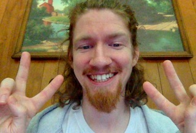

About Me
Hello friends/brothers and sisters!! My name is Scott, but some friends have called me Scottland over the years. I'm 26 years old, and life after high school has been rather complicated for me.
Once I get some good experience under my belt with a certain task, I can be a very helpful individual. With that being said, I've always struggled with being a 'people person', and branching out has been a tough endeavor. In spite of my personal limitations, I am eager to meet other individuals within the tech community here in Richmond and beyond.
Technology aside, I currently work at a Food Lion and I'm personally responsible for making sure that customers have access to milk, eggs, orange juice, coffee creamer, etc., as they need it. The most rewarding aspect of the job is seeing satisfied customers that regularly come back to shop in my store and recognize me as the guy to return to when they have any questions or concerns. It can be difficult to answer certain questions that customers ask, but a little patience goes a long way and I can typically find a solution for them. I'm sure this mindset will come in quite handy as I start off as a new web developer.
On the personal side of things, I've always had a fascination with art and music. I can't really say I have a favorite band or musical act, but I mostly enjoy listening to old Grateful Dead shows to tune in on the magic of the moment :) I've also taken up tie dying shirts as a side hobby, and you can feel free to check out the shirts I've dyed on my Etsy page.
Hope to see you soon!!